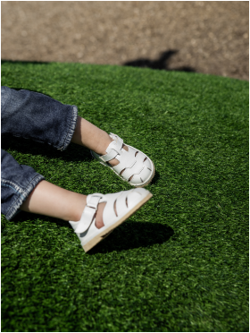
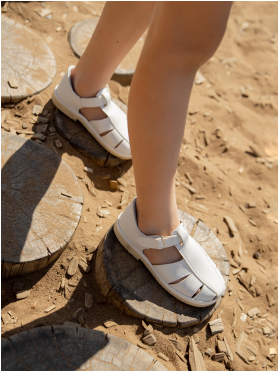
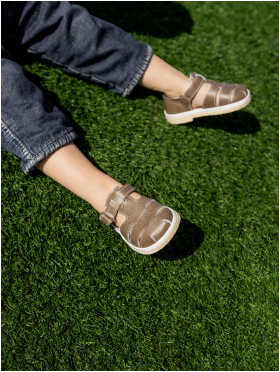
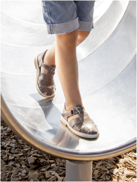
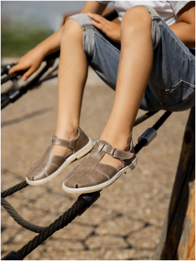
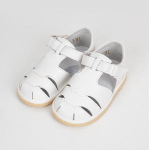
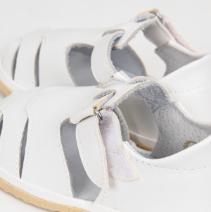
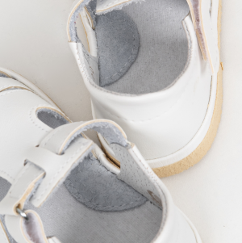
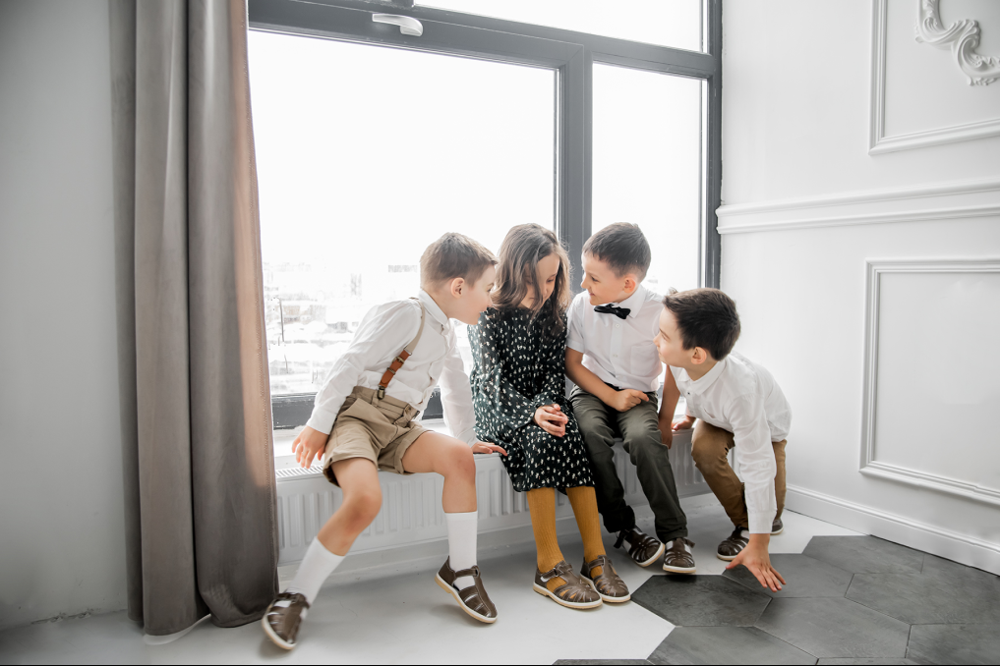
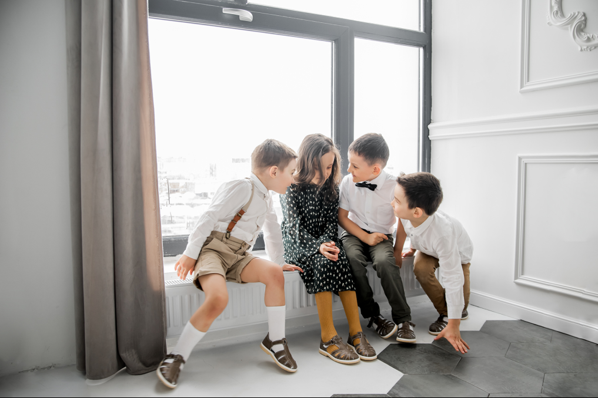

Стильные и лаконичные сандалики Kogos - отличный выбор на каждый день.

Белые сандалии
размеры 20-24

Белые сандалии
размеры 25-28
Белые сандалии
размеры 28,5-31

Коричневые сандалии
размеры 20-24

Коричневые сандалии
размеры 25-28

Коричневые сандалии
размеры 28,5-31
Размерная сетка
При выборе обуви просьба ориентироваться на размерную сетку.
Рекомендации по выбору размера:
1. Обвести голую ножку ребенка на листе бумаге
2. Измерить в сантиметрах длину стопы, найти значение в среднем столбце
3. Выбрать подходящий размер и оформить заказ.
Хотим обратить Ваше внимание, что новая обувь может иметь запах, это не является браком. После
первой
прогулки запах пропадает.
Если у Вас есть вопросы, напишите нам.
Высокий задник обуви дополнен мягким валиком, поэтому сандалики не будут натирать ножки.
Подошва обуви – пористая резина, обеспечивает необходимую гибкость и износостойкость обуви.
Еще один секрет удобства сандаликов - широкий и закрытый мысок. С закрытым мыском детям удобно
гулять, бегать, кататься на велосипеде. Красивые и нарядные сандалики Kogos родители выбирают для сменки
в детский сад.
Застежка на сандаликах - липучка, которая надежно фиксирует голеностоп. Ребенку будет удобно
самостоятельно надевать сандалии на липучке. Липучка также позволяет носить сандалики как на узкой
ножке,
так и на широкой.
Внутренний подклад и супинатор сделаны из натуральной кожи. Анатомическая текстильная стелька
сшита
из хлопка, поэтому нога ребенка будет оставаться сухой.



Сандалии для детей выполнены из качественных материалов.
Все мы родом из детства. А детство – это догонялки, прятки, прогулки. Каждому родителю важно
позаботиться о своем ребенке, обеспечить ему комфорт и безопасность. Удобная детская обувь – залог здоровья
детей. А качество детской обуви определяет долговечность. Стильные и лаконичные детские сандалики Kogos уже
полюбились многим мамам.
А дети готовы целый день бегать и прыгать в этих сандаликах, потому что в них хорошо.
Экономим Ваше время при выборе обуви.
Родители отмечают, что сандалики отлично сидят на ножке, приятно выглядят и подходят к любому
образу - повседневному и праздничному. Однотонные белые и коричневые сандалики одинаково идут мальчикам
и девочкам. Для праздника и фотосессии, для садика и детских центров, для летних прогулок и дней
рождений – минималистичный дизайн сандалей уместен везде. Берите детские сандалики двух цветов,
коричневые – для ежедневной носки, а белые – на праздник. Мы уже получили много отзывов от мам, они
говорят, что это идеальные лаконичные сандалии. Стильные и аккуратные мягкие сандалии обеспечат комфорт
и хорошее настроение Вам и Вашим детям.

 
